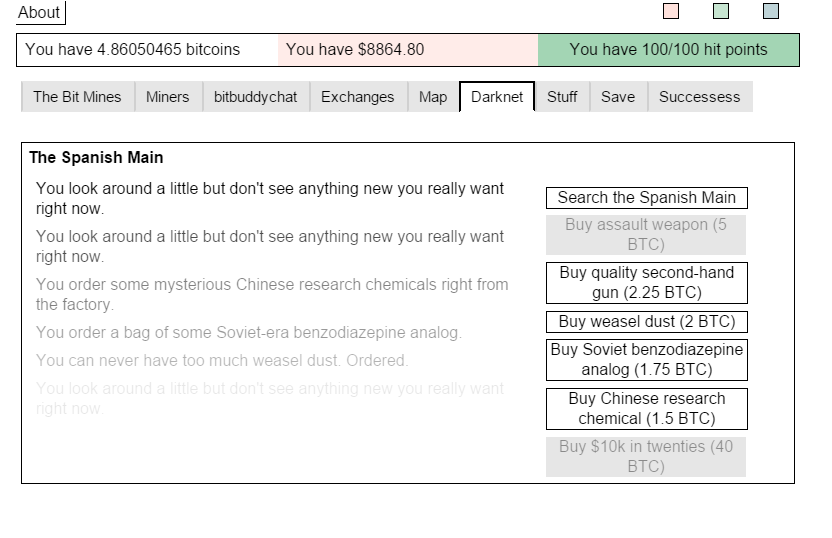

This bitcoin simulator is an insane trip through cryptocurrency hell
Bitcoin Mining Profit Calculator: Gaiden, the followup to last year’s Advanced Bitcoin Simulator, is a satirical, sometimes cryptic free web browser game written by an anonymous artist called Totally Not Satoshi (TNS). Both games, says TNS, are mostly a piss-taking response to fairly uncritical media coverage of Bitcoin last year, and to the more wide-eyed, fleeceable members of the Bitcoin community.
You begin the game looking to mine some bitcoins, but first you need to earn some fiat money to buy a miner. Beginning with a text-based game, you proceed to unlock abilities and meet fictionalized versions of Bitcoin figures like Andreas Antonopoulos, "Bitcoin Jesus" Roger Ver, Dorian Nakamoto (the guy Newsweek wrongfully credited with inventing Bitcoin), and a few other surprise characters that Bitcoin news followers will recognize.
{kind=link}
You’ll encounter many challenges along the way to actually making money from your Bitcoin mining endeavours. Indeed, once you advance your story a little, mining becomes secondary, replaced with a grand adventure full of hardware scams, broken promises, Soviet benzodiazepine analogs, secret islands, and begging for Bitcoin tips.
The whole game portrays Bitcoin through a lens of cult-like behavior, pump-and-dump market plays, armchair libertarian anti-state mouth-frothing, and naked scamming. The implication: the cyberpunk possibility of a decentralized networked asset beyond state control is intriguing, if impractical for buying groceries.
{kind=link}
Although it can be quite scathing, there’s a dry sophistication to Bitcoin Mining Profit Calculator: Gaiden’s takedown of the Bitcoin community’s underbelly. At a time when even the man behind just-for-fun Dogecoin is leaving the cryptocurrency world because of its "toxic" culture, the game’s message seems all the more fitting.
I caught up with Totally Not Satoshi to chat about the game and why it was made.
It hasn’t been an easy year in Bitcoinland, judging by the dropping price, constant scamming, implosion of the Bitcoin Foundation, and slow consumer adoption.
Enter Bitcoin Mining Profit Calculator: Gaiden, the followup to last year’s Advanced Bitcoin Simulator. It’s a satirical, sometimes cryptic free web browser game written by an anonymous artist called Totally Not Satoshi (TNS). Both games, says TNS, are mostly a piss-taking response to fairly uncritical media coverage of Bitcoin last year, and to the more wide-eyed, fleeceable Bitcoin community members.
You begin the game looking to mine some bitcoins, but first you need some fiat money to buy a miner. Beginning with a text-based game, you proceed to unlock abilities and meet fictionalized versions of Bitcoin figures like Andreas Antonopoulos, "Bitcoin Jesus" Roger Ver, Dorian Nakamoto (the guy Newsweek wrongfully credited with inventing Bitcoin), and a few other surprise characters that Bitcoin news followers will recognize.
You’ll encounter many challenges along the way to actually making money from your Bitcoin mining endeavours. Indeed, once you advance your story a little, mining becomes secondary, replaced with a grand adventure full of hardware scams, broken promises, Soviet benzodiazepine analogs, secret islands, and begging for Bitcoin tips.
The whole game pokes fun at the inordinate amount of cult-like behavior, pump-and-dump market plays, armchair libertarian anti-state mouth-frothing, and naked scamming that makes Bitcoin such a fascinating space today.
It’s not all bad news, of course. The technology will likely have some usefulness to somebody, even if its potential as a viable currency is limited for now. Darknet markets and transaction volumes continue to hum along, venture capital money continues to pour in, and MIT is now supporting the software’s core development. The cyberpunk possibility of a decentralized networked asset beyond state control is intriguing, if impractical for buying groceries.
Although it can be quite scathing, there’s a dry sophistication to Bitcoin Mining Profit Calculator: Gaiden’s takedown of the bitcoin community’s underbelly. At a time when even the man behind just-for-fun Dogecoin is leaving the cryptocurrency world because of its “toxic culture,” this game’s critical message is all the more necessary.
I caught up with “Totally Not Satoshi” to chat about the game and why it was made:
Chris: What inspired you to make the game?
Totally Not Satoshi: There wasn't really a single event that motivated the original one, The Advanced Bitcoin Simulator. The Mt. Gox collapse had just happened, and that's certainly part of it. But I think most of it was just a response to the fairly uncritical media coverage of Bitcoin at the time.
The stories tended to be general "we're living in the future" puff pieces, which just didn't match up with all of the "service hacked, everything lost" stories that were surprisingly common inside the Bitcoin community. For the second one, Bitcoin Mining Profit Calculator: Gaiden, it was mostly just realising that it had been about a year since the first one.
Were you inspired by any other games?
Bitcoin Mining Profit Calculator: Gaiden borrows a lot from a game called A Dark Room, which does a lot of things the same way as Candy Box but also has the cooldown buttons (click then wait) as a major part of the interface semantics. It's also worth mentioning a game called Frog Fractions.
Things get a little dark
Why is Andreas Antonopoulos wearing that mask?
I guess the short, kinda literalist answer is because he's in a drug-distorted vision. If you want an answer from textual analysis it's because he's part of a three wise monkeys motif (see no evil, hear no evil, speak no evil). In terms of in-narrative drug-distorted logic, it's because presumably the protagonist is familiar with the Ross Ulbricht trial and knows that Antonopoulos was someone the defence wanted as a witness, but Judge Forrest didn't allow him.
Were you ever or are you into Bitcoin?
Nah. Back before the Gawker article that caused it to really take off I looked at it, because why the hell not. My kinda-sorta goal when I looked at Bitcoin for the first time was to see if I could manage to buy some random Bitcoin-themed tchotchke without having to put up any cash. That worked out pretty much as you'd expect, and I ended up just saying "fuck it" a couple days later having never bought, sold, owned or transacted any bitcoins.
Why do you think Bitcointalk [the most popular Bitcoin forum] has deleted posts about your new game?
Back in 2014 when I announced the first game, the only announcement was in Bitcointalk. Part of the schtick being that it was completely deadpan: We've developed this astonishing new way of modelling volatility in Bitcoin markets, blah blah…
Very early on there were a lot of Bitcoiners who were engaging with it entirely at face value—live posting their investing strategies, explaining how to "beat" the in-game exchange, and so on. But even when that passed and everyone pretty much [figured out it was a joke], a surprising amount of the response was positive.
So the original plan was to announce the new one the same way. Within minutes it got moved out of the general forum and into the mining subforum… But then another moderator deleted the post for being "unrelated garbage." A second announcement posted about half a day later got punted off, … at which point I figured, fuck it, and just announced it on Reddit.
As for why? Fuck if I know. I guess if I was knee-deep in Bitcoin I'd be losing my sense of humour too.
Why do you think a segment of the Bitcoin community is so obsessive?
I think the deal with Bitcoiners is kind of like the deal with most fringe groups. In their head there's a narrative: I'm not a bad person, I try hard, and for some reason I don't get quite as much as I deserve. I look around and see other people getting far more than they deserve. The only explanation is that there must be something terribly wrong with the system.
That basic narrative is something a lot of people can identify with. But for some people something in their head clicks and they become convinced that there's one specific thing, some gimmick that's the key that unlocks the whole thing. With Bitcoiners it's a particular strain of internet libertarianism that seems to encourage a very transactional model of human interactions. And once you've latched onto something as The One Weird Trick that explains everything, of course everyone who doesn't believe it is at best a know-nothing bozo and at worst is one of the guys in on it from the other side.
Anything else you'd like to add?
I really don't think it's the responsibility of the creator of a work to interpret it for an audience, but I'll say that virtually everyone seems to interpret the ending differently than intended.
Oh, and the first calculator you encounter in game (the one with multiple charts) is about as accurate (over the timeframe covered) as any model of an inherently stochastic process can be. The game contains historical data for the period between January 1, 2014 and April 1, 2015 and uses it precisely as described.